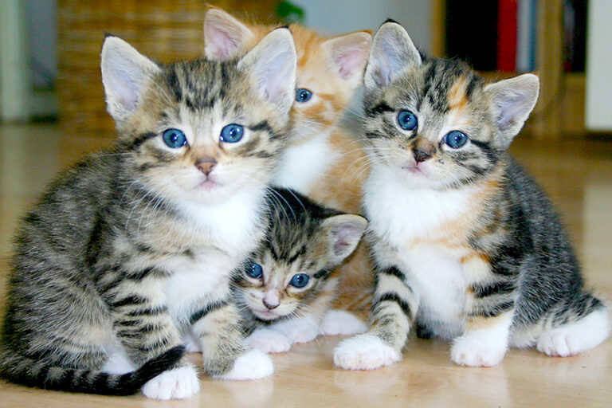

Hewan Kucing

Kucing termasuk ke dalam kelompok hewan karnivora karena pada dasarnya adalah pemakan daging. Kucing adalah mamalia kecil yang sering dijadikan hewan peliharaan di banyak rumah di seluruh dunia. Mereka termasuk dalam keluarga Felidae dan merupakan salah satu hewan peliharaan yang paling populer di dunia. Kucing yang berada di sekitar rumah atau dipelihara disebut denan kucing domestik. Kucing domestik berasal dari kucing liar yang hidup di wilayah Timur Tengah. Proses domestikasi kucing dimulai sekitar 9.000 tahun yang lalu, ketika manusia mulai mengadopsi kucing untuk membantu mengendalikan populasi tikus di permukiman mereka. Ciri-ciri kucing sehat secara umum yaitu tubuhnya dipenuhi dengan bulu, namun ada beberapa spesies yang tidak berbulu. Kemudian kucing memiliki tulang belakang yang lentur dan mampu memanjang. Perawakan kucing juga dilengkapi dengan ekor, telinga yang khas berbentuk segitiga serta kumis di atas mulutnya. Terkadang kucing bisa berbaur dengan manusia sebagai peliharaan, namun bisa juga hidup secara liar. Kucing memiliki masa kehamilan selama 63 hari. Kucing memiliki 32 otot di telinganya. Kucing bisa melompat hingga enam kali tingginya. Kucing memiliki suhu tubuh yang lebih tinggi daripada manusia. Kucing bisa bergerak sangat diam-diam, itu membantu mereka untuk berburu dan menyelamatkan dari predator yang lebih besar.
Sikap dan Kelakuan:
Kucing dikenal karena sifatnya yang independen dan penjaga. Mereka suka menjilati diri sendiri untuk membersihkan bulu dan sering tidur sepanjang hari. Kucing juga terkenal sebagai pemburu yang handal, mengejar burung kecil atau serangga sebagai bagian dari naluri alaminya.
Komunikasi:
Kucing menggunakan berbagai cara untuk berkomunikasi, termasuk suara, gerakan tubuh, dan ekspresi wajah. Miau adalah suara yang paling umum, dan kucing bisa menggunakan berbagai nada untuk menyampaikan keinginan atau kebutuhan mereka.
Kebersihan:
Kucing sangat memperhatikan kebersihan. Mereka sering menjilati bulu mereka untuk membersihkan diri dan menggunakan pasir kucing sebagai tempat buang air.
Ragam Ras:
Ada berbagai ras kucing dengan ciri-ciri unik. Misalnya, ada kucing Persia yang memiliki bulu panjang dan mata besar, atau kucing Siamese yang dikenal dengan warna tubuh yang kontras dan mata birunya yang mencolok.
Umur dan Kesehatan:
Umur kucing biasanya berkisar antara 12 hingga 15 tahun, tetapi dengan perawatan yang baik, beberapa kucing dapat hidup lebih lama. Perawatan kesehatan, vaksinasi, dan pemantauan diet adalah faktor penting dalam menjaga kesehatan kucing.
Kesehatan dan Pemeliharaan:
Perawatan kesehatan, vaksinasi, dan pemberian makanan yang tepat penting untuk menjaga kesehatan kucing. Pemeriksaan rutin oleh dokter hewan juga dianjurkan.
Kemampuan Sensorik
Kucing memiliki indra pendengaran dan penglihatan yang sangat baik. Kumis mereka juga membantu dalam menilai ruang di sekitarnya.
Kucing adalah hewan yang penuh kepribadian dan bisa menjadi teman yang setia bagi pemiliknya. Meskipun bersifat independen, kucing juga menyukai perhatian dan interaksi dengan manusia.